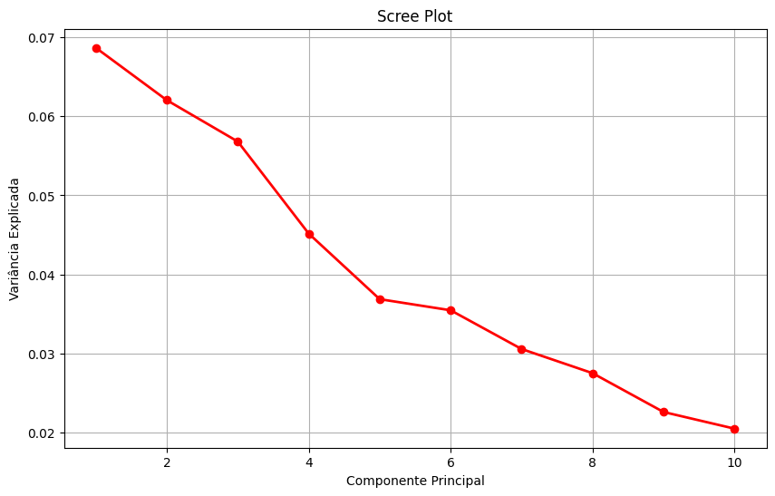
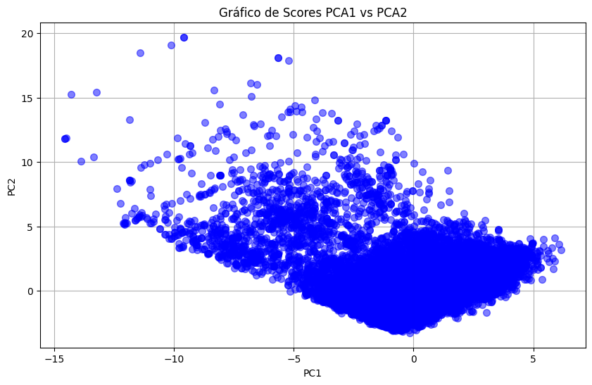

Análise de Componentes Principais (PCA)
O PCA foi aplicado para condensar a informação da base logística em componentes ortogonais, reduzindo redundância entre variáveis e mantendo a estrutura estatística necessária para modelagem. Em vez de trabalhar com dezenas de atributos correlacionados, a análise passa a operar em um espaço mais compacto, estável e interpretável, com foco em desempenho preditivo e robustez analítica.
Método de Aplicação
A abordagem combina padronização dos dados, decomposição em componentes principais e definição de corte por variância acumulada para equilibrar simplificação da base e preservação de informação.
Variância Explicada e Scree Plot
O Scree Plot mostra quanto cada componente principal contribui para explicar a variância total da base. A leitura prática é observar a inclinação da curva: no início, cada componente adiciona ganho relevante; depois do ponto de cotovelo, a curva tende a achatar, sinalizando que novos componentes agregam informação incremental cada vez menor.
O Scree Plot não define sozinho o número final de componentes, mas orienta essa decisão ao evidenciar onde o ganho marginal começa a cair. Em conjunto com a meta de variância acumulada de 80%, ele sustenta um corte tecnicamente equilibrado entre retenção de informação e simplificação do espaço de atributos.

Scree Plot: queda de contribuição por componente e identificação visual da região de cotovelo, onde os ganhos passam a ser marginais.
Seleção Automática para 80% de Variância
Após o diagnóstico inicial, o PCA completo é ajustado e a variância acumulada é usada para selecionar automaticamente o menor número de componentes que atinge o limiar de 80%.
- Limiar configurado: target_cumulative_variance = 0.80.
- Regra de escolha: seleciona o primeiro ponto em que a variância acumulada alcança ou supera 80%.
- Saída esperada: quantidade de componentes selecionados e variância acumulada atingida.
Conclusão: para preservar 80% da informação, foi necessário manter um número elevado de componentes, indicando que a variância está distribuída entre vários fatores e que o fenômeno logístico analisado é multivariável, sem dependência de poucos atributos dominantes.
Visualização de Scores (PC1 x PC2)
O gráfico final é um gráfico de scores, com as observações projetadas em PC1 e PC2. Essa visualização ajuda a inspecionar dispersão e possíveis agrupamentos no espaço reduzido.

Projeção das observações no plano PC1 x PC2 (scores do PCA).
Como os componentes são ortogonais, o PCA reduz redundância entre variáveis e gera uma representação mais compacta para etapas posteriores de modelagem.
Escopo Atual e Extensões Futuras
O PCA entrega uma base transformada mais enxuta e tecnicamente consistente para as próximas etapas do projeto. Com menor colinearidade e menor ruído estrutural, a modelagem tende a ganhar em estabilidade, tempo de treino e capacidade de generalização.
- Aplicação em modelos supervisionados: utilizar os componentes como entrada para regressão, árvores e modelos de ensemble.
- Segmentação operacional: explorar clusterização no espaço PCA para identificar perfis de rota e padrões logísticos.